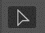
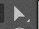
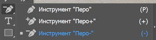

Векторная графика. Интерфейс Adobe Illustrator.
Изучите материал о векторной графике и интерфейс Adobe Illustrator. Чтобы перейти к учебному материалу, кликните на каждую из иконок.
Изучите материал о векторной графике и интерфейс Adobe Illustrator. Чтобы перейти к учебному материалу, кликните на каждую из иконок.
Векторное изображение – это графический объект, построенный из геометрических примитивов, таких как точки, линии, сплайны и многоугольники.
Изображение, созданное в векторных программах, основывается на математических формулах, а не на координатах пикселов. Поэтому векторные файлы содержат наборы инструкций для построения геометрических объектов. Основу векторных изображений составляют разнообразные линии, называемые векторами, или контурами. Каждый контур представляет собой независимый объект, который можно редактировать: перемещать, масштабировать, изменять.

Достоинство и недостатки растровой графики
Достоинство:
1. Размер, занимаемой описательной частью, не зависит от реальной величины объекта, что позволяет, используя минимальное количество информации, описать сколько угодно раз большой объект файлом минимального размера
2. В связи с тем, что информация об объекте хранится в описательной форме, можно бесконечно увеличить графический примитив, например, дугу окружности, и она останется гладкой. С другой стороны, если кривая представлена в виде ломаной линии, увеличение покажет, что она на самом деле не кривая.
3. Параметры объектов хранятся и могут быть легко изменены. Также это означает что перемещение, масштабирование, вращение, заполнение и т. д. не ухудшат качества рисунка. Более того, обычно указывают размеры в аппаратно-независимых единицах (англ. device-independent unit), которые ведут к наилучшей возможной растеризации на растровых устройствах.
4. При увеличении или уменьшении объектов толщина линий может быть задана постоянной величиной, независимо от реального контура.
Недостаток:
1. Не каждый объект может быть легко изображен в векторном виде — для подобного оригинальному изображению может потребоваться очень большое количество объектов и их сложности, что негативно влияет на количество памяти, занимаемой изображением, и на время для его отображения (отрисовки).
2. Перевод векторной графики в растр достаточно прост. Но обратного пути, как правило, нет — трассировка растра, при том что требует значительных вычислительных мощностей и времени, не всегда обеспечивает высокое качества векторного рисунка.
Форматы векторной графики: .cdr, .ai, .cmx, .eps, .fla, .svg, .swf, .wmf.
К программным средствам создания и обработки векторной графики относятся следующие ГР: CorelDraw, Adobe Illustrator, а также векторизаторы (трассировщики) - специализированные пакеты преобразования растровых изображений в векторные.
Растровая и векторная графика (сравнительная таблица)
| Растровое изображение | Векторное изображение | |
| Способ формирования | Множество пикселей, каждому из которых присваивается положение и цвет | Математические формулы, которые задают прямые и кривые линии + цвета |
| Сфера применения | Реалистичные или близкие к реалистичным изображения: фотография, видео, компьютерная графика Полиграфия: создание небольших изображений (буклетов, листовок, лифлетов). Также возможно создание крупных билбордов, но файл будет иметь очень большой размер. | Графика, которой не нужна реалистичность: иконки, логотипы, плоские иллюстрации Полиграфия, для которой важно масштабирование без потери качества: билборды, растяжки, лайтбоксы и др. |
| Возможность увеличения без потери качества | Низкая, ограничена изначальным разрешением | Высокая, не ограничена ничем |
| Реалистичность | Высокая | Низкая |
| Ограничения | Нельзя увеличить без потери качества. При повышении разрешения повышается размер файла, требовательность к производительности устройства и пропускной способности канала присваивается положение и цвет | Нельзя создавать фотореалистичные изображения |
| Требовательность к оперативной памяти | От средней до высокой | Низкая |
| Скорость обработки | От средней до высокой (у изображений с высоким разрешением) за счет того, что компьютеру нужно обработать каждый пиксель | Средняя за счет небольшого количества вычислительных операций |
| Программы для работы | Adobe Photoshop, Procreate, Krita | Adobe Illustrator, CorelDRAW |
Интерфейс:
1. Панель инструментов
2. Панель управления
3. Панель палитр
4. Монтажная область
5. Рабочая область

Инструменты
 - Инструмент «Выделение»
− Позволяет выделять объекты и группы объектов щелчком одним мыши на них или обводя необходимые объекты;
− При зажатой клавише Alt в момент перетаскивания объекта, позволяет скопировать объект.
 - Инструмент «Частичное выделение»
Инструмент «Частичное выделение» дает возможность выделять и редактировать узлы объекта или части обводки
 - Группа инструментов «Перо»
Инструмент Перо + предназначен для добавления опорной точки на контуре, а Перо– для удаления опорной точки